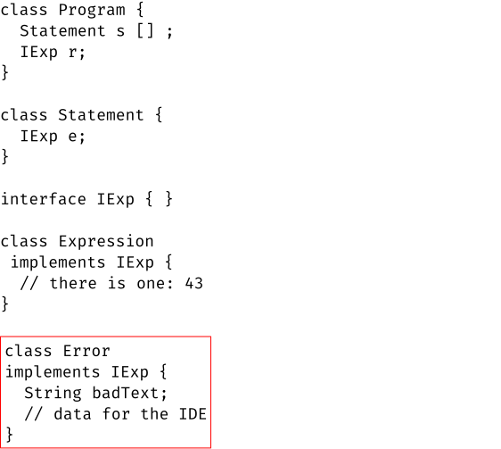

II Syntax and Parsing
|
|
What is a (n executable) model of syntax?
7 Concrete Syntax is Mostly Irrelevant
Different programming languages use different kinds of syntax. Many present syntax as sequences of any characters, with words delineated via some white space, and sentences separated via semicolons or special forms of white space. Language creators write down rules that explain the organization of sequences of characters into words, the grouping of words into sentences, and the recognition of sentences as complete programs.
Borrowing terminology from linguistics, these rules are called grammars. The word Parsing denotes the process of recognizing sequences of characters as words, groups of words as sentences, and certain sentences as complete program. A parser implements the parsing process.
Lisp stands out. The members of the Lisp family of languages use parentheses, braces, and brackets (and arbitrary white space) to separate words and to organize words into groups. Indeed, due to nesting, it is the programmer who takes on some of the task of organizing code to help the parser. People refer to this kind of notation as a concrete syntax tree, because the nesting of parenthesize sentences suggests what computer scientists call trees. In Lisp languages, notations for instructions as well as data employ parenthetical notation since the late 1950s; the latter is called an S-expression.
The designers of contemporary data description notations, such as XML and JSON, have adapted Lisp’s S-expression notation, while making a few concessions to people who like conventional XML’s pairs of parentheses have the shape <letters> ... </letters>. syntax. They employ brackets, braces, and named parentheses to organize data. Developers tend to speak of semi-structured data.
Due to the large variety of syntax, studying grammars and parsing techniques has essentially become its own research area. On the positive side, grammars for describing grammars date back to the 1960s, and their expressive power and limitations is well understood. Furthermore, by the 1970s, programming language researchers could offer programs that turn grammars into parsers, so-called parser generators. On the negative side, using these tools isn’t straightforward. Worse, while a generated parser typically is good at determining whether some sequence of characters satisfies the rules of a grammar, it typically fails to provide an accurate diagnosis when the characters fail the rules.
Hence, if a course on programming language pragmatics were to pay close attention This is also a reason why courses for beginners should avoid text and parsing. to grammars and parsing, students might never get to see any topics related to semantics or pragmatics. To avoid this problem, we compromise. Concretely, this book uses semi-structured data as concrete syntax for its sample programs; to make this precise, it uses S-expressions. As the history of Lisp and data notations validates, programmers can easily use such a notation to write down programs. At the same time, it enables us to explain the concepts of grammar and parsing in a concise manner and to include a discussion of the pragmatics of parsing.
8 Grammars for Describing Grammars
As the preceding chapter mentions, BNF (or one of its modern variants) is the most commonly used tool to describe the concrete syntax of a programming language. Instead of describing BNF formally, we present just enough examples so that readers can easily comprehend the syntax descriptions in the remaining chapters.
Program ::= a |
Program ::= a | b | c |
Program ::= Statement\(\sp*\) Expression |
Statement ::= print(Expression); |
Expression ::= 43 |
A Program is a possibly empty sequence of Statements followed by one Expression.
A Statement consists of a four pieces: the word print, the character (, an Expression, and the characters ) and ;.
An Expression is just the text 43.
43 |
print(43); print(43); 43 |
Program ::= Statement\(\sp+\) Expression |
9 The Parsing Process and the Parser Function
44 |
print(44); |
print(43); |
yes, the given text belongs to all the collection of all texts that the production describes;
no, the given text does not belong to the collection of texts that the production describes.
parseExpression : PlainText -> Boolean |
// does the given text belong the collection of texts |
// described by the Expression production |
parseExpression(text) = |
true if the text consists of ``4'' followed by ``3'' |
false otherwise |
10 The Pragmatics Question
print(43); print(44); print(43); 43 |
parseExpression : PlainText -> Optional<A> |
// where A is either |
// - some data that represents a parsing failure, or |
// - none, if parsing succeeds |
which parts of the text belong to the Expression;
which parts of the text belong to the Statement; and
which parts of the text belong to the Program.
parseExpression : PlainText -> B or C |
// where B is informative data in the error case |
// and C is informative data in the success case |
10.1 Pragmatics Pairs Workers With Working Situations
the user of the programming language entering text into the IDE and wishing to get fast feedback as to whether this text is well-formed according to the intended grammar production;
the implementer of the programming language perceiving the parser as just one piece of the complete implementation or, in the case of this book, an executable model for syntax and semantics.
10.2 Costs and benefits
Result Type
User
Implementer
Boolean
uninformative
straightforward
Optional<A>
informative
middling complexity
B or C
informative
complex; useful for
the overall implementation
Summarizing the benefits and costs of the design alternatives in this manner is a helpful tool for making decisions concerning language pragmatics. While the third alternative offers advantages to both people in the case of parsing, such clear-cut cases are rare when it comes to programming language pragmatics. It is therefore critical that decision makers keep in mind the pairings that determine pragmatic concerns: the human being and the many working situations that those find themselves in.
11 Concrete vs Abstract Syntax
Let us now turn to the challenge of designing a data representation that is useful to both successful parsing processes and unsuccessful ones.
Algol,
Fortran,
Scheme,
R,
Pascal
C
Racket
OCaml
x := 1
x = 1
(set! x 1)
x <- 1
an assignment statement consist of two parts: |
- a left-hand side, |
- which is a plain-text variable name |
- a right-hand side, |
- which is a number in the presented examples |
but, in general, is an expression. |
Figure 1: A tree presentation of the data representation for assignments
What this figure suggests is that an assignment statement can be understood as a node in a tree. The node has two branches: one for the left-hand side and one for the right-hand side. While the left branch points to a leaf, namely, the name of the variable, the right one ends in a sub-tree, because the right-hand side of an assignment statement is an expression and because the representation of an expression is likely to be a tree all by itself.
an addition expression consist of two parts: |
- an operator on the left, |
- which is another expression |
- an operator on the right, |
- which is another expression |
(set! x (+ x 1)), which is what a Scheme programmer writes to increase x by one;
x = x + 1, which is what a Fortran, C, or Java programmer uses for the same purpose.
Using this analysis, we can express this idea as a collection of interfaces and classes in Java. Take a look at the two columns of code in Figure 2. The left column displays the data representation of an assignment statement. While the name of the class signals that an instance represents an assignment statement, its two fields correspond to the two clauses of the informal description or the two branches of the tree in figure 1. The type specification for lhs implicitly informs a reader that variable names are represented as Strings.
class AssignmentStatement {
String lhs;
Expression rhs;
}
interface IExpression { }
class VariableReference
implements IExpression {
String name;
}
class Addition
implements IExpression {
IExpression left;
IExpression right;
}
Figure 2: A data representation for assignment statements and expressions
The right column is the data representation for simple expressions, variable references and additions to be precise. Since there are many different kinds of expressions that the rest of the program treats in a uniform manner, the data representation uses an interface to tie the various variants together. In our case there are two variants: variable references such as the x in x + 1, and addition expressions.
Stop! Reformulate the data representation from figure 2 in your favorite programming language. Then use your data representation to represent (set! x (+ x 1)) and x = x +1.
Choosing such a tree-oriented data representation clearly answers half the question at the end of The Pragmatics Question. If a parser returns a tree-shaped value when parsing succeeds, the nodes in the tree identify the BNF production that the parse recognized. The pieces of each node represent the parts of the plain text that correspond to one of the alternatives on the right-hand side of the BNF production. Because these tree-shaped data structures are generalizations of many concrete-syntax shapes for the same kind of syntactic element, language researchers call them abstract syntax trees or just ASTs for short.
The remaining question is what a parsing function should return when parsing fails. Since the pragmatics question about parsing identified the IDE and the user of the IDE as the recipient of the relevant information, the data representation must enable the IDE to mark up the pieces of text that do not match the given BNF.
print(44); |
which part of the text the parser recognizes, and
which part causes the parser to fail.
Program ::= Statement\(\sp*\) Expression
Statement ::= print(Expression);
Expression ::= 43

Figure 3: A data representation for the grammar from Grammars for Describing Grammars
Figure 3 also suggests what happens if the parser does not find an Expression according to the BNF. The interface IExp is implemented twice: once by the Expression class and once by an Error class. So, when the parser for the Statement production is confronted with print(44);, it defers to the parse for the Expression production, which returns an instance of Error instead of the Expression class. In other words, the parser’s output remains a tree, but this tree representation contains nodes that indicate that an error happened. When given an abstract syntax tree with an error node or even several such error nodes, it can use the structure of the tree together with the data in the Error node to mark up text that can’t be parsed.
Stop! Reformulate the data representation from figure 3 in your favorite programming language. Then use your data representation to represent print(44);.
11.1 A Parser Returns an Abstract Syntax Tree
Let’s draw the general lesson from these examples. First, parsing plain text produces an abstract syntax tree. Second, in order to report failures in an informative manner, the AST representation is enriched with error nodes.
parse : PlainText -> AST+ |
11.2 Parse, Don’t Validate
While parsing is a programming-language concept, software developers have
recognized its general usefulness. That is, a software system that consumes plain
text requiring validation—
12 Parsing: A Complete Example
It is time to put all the pieces together and look at a complete example. As the
introduction to this chapter says, this book simplifies the parsing task to
avoid getting bogged down in questions of concrete syntax. To start with, the
parser presented here analyzes semi-structured data for grammars that identify a
subset of semi-structured data. While XML and JSON are modern versions of this
idea, the idea itself is decades older and the original
version—
S-expression is one of: |
-- Number |
-- Symbol |
-- (S-expression ... S-expression) |
|
A symbol is a non-empty sequence of keyboard characters |
that is not also a number. |
Program ::= (Statement\(\sp*\) Expression) |
Statement ::= (Variable = Expression) |
Expression ::= 1 |
| 2 |
| 3 |
| Variable |
| (Expression + Expression) |
|
The set of Variables consists of all non-empty sequence of |
alphanumeric characters, starting with an alphabetical letter. |
The phrase “proper program design” refers to an understanding of programming as presented in How to Design Programs.
(define concrete |
`((x = 1.0) |
(y = 2.0) |
(z = (x + (x + y))) |
(z + 3.0))) |
concrete consists of four S-expressions between parentheses. Hence, we must check that the first three belong to the set of Statements and the last one to the set of Expressions.
(x = 1.0) is a Statement, because x belongs to the set of Variables and 1 is obviously an expression.
Verifying that (y = 2) and (z = (x + (x + y))) belong to the production for Statements proceeds in a similar manner.
Stop! Don’t just accept this sentence. Just do it!
Finally, (z + 3) is an Expression:
it consists of ( followed by a Variable followed by +, followed by 3, and wrapped up by ).
At this point, we need to choose a programming language in which to articulate an AST data representation and a parser for the sample BNF. Our favorite programming language for this purpose is Racket, and you may understand why after reading the next couple of pages.
Stop! Settle on your favorite programming language, and choose your favorite semi-structured form of data, e.g., XML or JSON instead of S-expressions. Work through the same sample exercise with your choices.
(struct prog [statements end])
(struct stat [lhs rhs])
(struct expr [])
(struct num expr (n))
(struct ref expr (name))
(struct add expr (left right))
(struct err (msg))
#; {type Prog =
(U Err
(prog Sta* Expr))}
#; {type Sta* =
[Listof Stat]}
#; {type Stat =
(U Err
(stat Symbol Expr))}
#; {type Expr =
(U Err
(num N)
(ref Symbol)
(add Expr Expr))}
#; {type Err =
(err String)}
Figure 4: A Racket AST data representation for the sample BNF
The first three groups correspond to the three productions of the sample BNF grammar.
Since the Expression production describes three kinds of alternatives—
numerals, variables, and additions— the third group consists of an interface-like structure— expr— and three corresponding variants— num, var, and add. The fourth and extra group contains a single structure-type: err. It exists to inject error nodes into the AST.
The right-hand column consists of comments that explain the relationship among the structure types as if Racket had a type system. It tells a reader of the code The notation leans on Typed Racket. that, for example, an instance of prog always contains an instance of Sta* in the first field and an instance of Expr in the second. Furthermore, the quasi-type Prog is a union that contains Err and all legal instances of prog, meaning a parser function for the Program production may return (err "...").
Stop! Work out an S-expression that is not a member of the set that the Program production describes.
Stop again! Explain the remaining type-like comments on the right-hand side of figure 4.
(define ast |
(prog |
(list |
(stat 'x (num 1.0)) |
(stat 'y (num 2.0)) |
(stat 'z (add (ref 'x) (add (ref 'x) (ref 'y))))) |
(add (ref 'z) (num 3.0)))) |
Racket greatly facilitates writing a parser that determines whether an S-expression satisfies the grammar rules of the sample BNF. Figure 5 displays the entire program. The main function composes two computations: read, which reads an S-expression from the standard input or console, and program->ast, which attempts to parse this S-expression as a member of the Program production.
Following proper program design ideas, the remaining functions in figure 5 correspond to the three productions in the sample BNF in a one-to-one fashion. The three functions are named in a fashion that clarifies their role in the parsing process. Each function consists of n + 1 conditional clauses, where n is the number of alternatives on the right-hand side of the production. The extra clause corresponds to a mismatch of the given S-expression and the parsed production.
The function uses Racket’s algebraic match form to check whether the given S-expression is a list. Concretely, (list s ... e) matches txt if the latter is a list and contains at least one element, e. All other elements are collected in a potentially empty list called s.
If txt matches, the function instantiates prog; if txt fails to live up to the sample BNF grammar, it does do in nodes below prog.
Otherwise the conditional’s catch-all clause returns an instance of err to indicate that the S-expression cannot possibly belong to the Program production.
This last clause kicks in even if the set of S-expressions were extended with additional forms of data. That is, this approach to parsing is robust.
#; { -> Prog}
;; parses the S-expression given on STDIN
(define (main)
(program->ast (read))
#; {S-expression -> Prog}
(define (program->ast txt)
(match txt
[(list s ... e)
(prog (map statement->ast s) (expression->ast e))]
[_ (err (~a "program expected, given " txt))]))
#; {S-expression -> Stat}
(define (statement->ast txt)
(match txt
[(list lhs '= rhs)
(stat lhs (expression->ast rhs))]
[_ (err (~a "statement expected, given " txt))]))
#; {S-expression -> Expr}
(define (expression->ast txt)
(match txt
[1 (num txt)]
[2 (num txt)]
[3 (num txt)]
[(? symbol?) txt] ;; needs additional checking
[(list left '+ right)
(add (expression->ast left) (expression->ast right))]
[_ (err (~a "expression expected, given " txt))]))
The first five clauses correspond one-to-one to the right-hand side of the Expression production.
The first three clauses are literal matches for 1, 2, and 3.
The fourth clause (mostly) takes care of the parsing of Variables.
Stop! As is, this clause would record the symbol +-*/ as member of Variable, but it obviously isn’t according to our sample BNF. How would you fix the program to enforce the constraints on Variable occurrences properly? Make sure your own implementation of this sample program does a better job than our program.
The last clause is a catch-all clause, which is—
as always— used to report errors, that is, cases when the given S-expression should be a member of Expression but isn’t.
12.1 Why Parsing Semi-structured Data Matters
The example makes all look too easy and, because of this, perhaps a bit irrelevant. But, appearances are deceiving. Time and again, people have re-discovered forms of semi-structured data for a number of different purposes: storing intermediate results, conveying data from one networked computer to another, and writing programs in little language.
Such little languages often serve as an extension mechanism for large software systems. Among other things, they play a role for configuring software system during start-up or for loading additional functionality while the systems run. To this end, the systems contain a component that can execute programs in these little languages, either directly or via abstract machines.
In short, don’t write off this exercise as a trivial little program. It might just come in handy one day.
13 Project Language: Bare Bones
(if0 Expression Block Block), which looks like the simple conditional, combining a conditional expression with two blocks of Statements; and
(while0 Expression Block), which is representative of the looping constructs found in ordinary languages.
Program ::= (Statement\(\sp*\) Expression)
Statement ::= (Variable = Expression)
| (if0 Expression Block Block)
| (while0 Expression Block)
CONSTRAIN These Blocks must not end in an Expression.
Block ::= Statement
| (Statement\(\sp+\))
Expression ::= GoodNumber
| Variable
| (Variable + Variable)
| (Variable / Variable)
| (Variable == Variable)
The set of Variables consists of all non-empty sequence of
alphanumeric characters, starting with an alphabetical letter.
It excludes the keywords `if0` and `while0`.
The set of GoodNumbers comprises all inexact numbers
(doubles) between -1000.0 and +1000.0, inclusive.
The grammar in figure 6 introduces one innovation: Blocks. Both the if0 alternative and the while0 alternative of the Statement production refer to Block, thus allowing programmers to use either one Statement or a non-empty sequence of Statements.
Finally, the set of Expressions comes with a few additions compared to the sample BNF: many more numerical literals, a division expression, and a comparison expression. Note, however, that it also restricts the shape of Expressions in comparison to the sample BNF. Thus, the Bare Bones language no longer contains the concrete example from Parsing: A Complete Example.
Stop! Determine where a parser for Bare Bones would flag the concrete syntax of concrete to inform the programmer of a grammar violation.
(define concrete-bare-bones |
`((x = 1.0) |
(y = 2.0) |
(temporary = (x + y)) |
(z = (x + temporary)) |
(temporary = 3.0) |
(z + temporary))) |
Exercise 1. Your task is to design an AST data representation for Bare Bones and to implement a parser for this language in your favorite programming language. The parser maps an S-expression to an instance of AST+, an abstract syntax tree that may contain error nodes.
13.1 Model
The Bare Bones language represents our first, simple model. It looks and feels a bit like the kind of languages you should have encountered so far, except for the many parentheses, which simplify the parsing process. It differs from these languages in two visible ways: (1) it lacks nested expressions, and (2) numbers are its only form of data.
Since the goal of this book is to examine questions of pragmatics, we must judge these differences in those terms. From the perspective of pragmatics, the first difference is superficial. We have already seen a trick the overcomes the lack of nested expressions on the basis of simple local transformations to a program. As a matter of fact, this restriction is merely imposed to simplify your project.
The second difference is highly significant; in this day and age, we know that a language should support different forms of data and indeed an extensible collection of data types. Structured Data and Abstraction addresses this obviously pragmatic issue in depth.